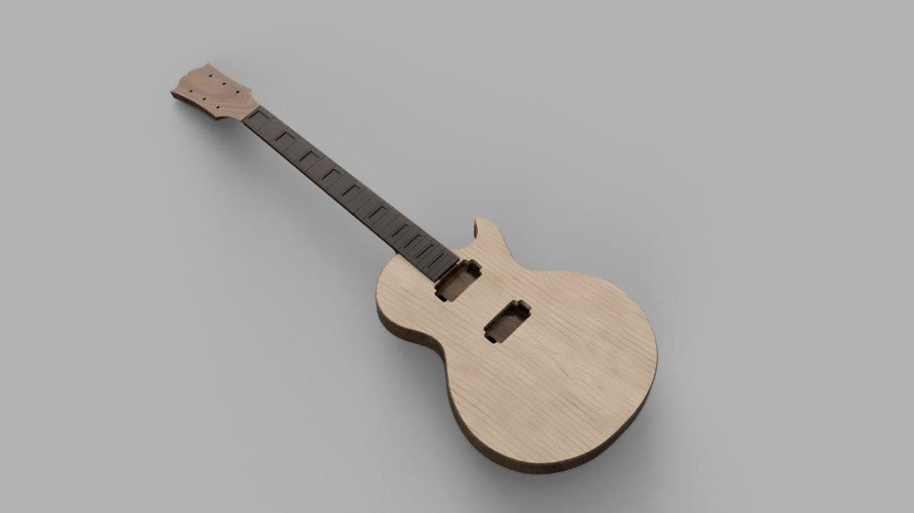
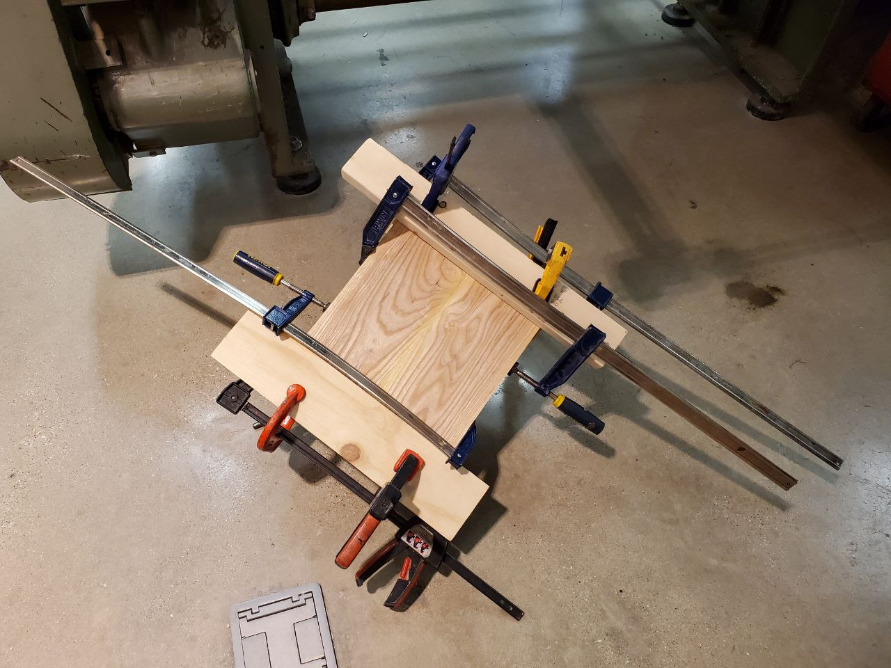

Introduction
This project started when I enrolled into the university and first found out that there was a workshop. My roommate has built his own guitar in the past, and as I was learning the guitar, I decided to give it a go as well. At the time, I didn’t possess all the necessary skills to complete the project, but I was dead set on making it a reality.
I did some research, and realized that going the traditional route of hand-crafting a guitar was wishful thinking on my part. The skillset required was not only not available to me, but I couldn’t hope to perfect it over my years at the university. So, as an up and coming engineer, I went with a simpler (arguably, harder) approach of using tools to do the work for me. I just had to spend a few weeks doing all the design work.
CAD
I started with picking a guitar I wanted to make. Originally, I was recommended a Telecaster due to the simplicity of its body, but since I was going to use CNC machines for the manufacturing anyways, it didn’t really matter which guitar I went with. So I picked my favorite - a Les Paul.
Next, I had to actually design the model of it, which wasn’t terrible. Fortunately, there are schematics of the guitar available online, so I had quick access to all the dimensions. There were a few tricky parts, like getting the shape of the top curve exactly, but in the end, the model was complete.
I used Fusion 360 for this, because it was free.

Manufacturing
After exporting all the necessary CAM files, it was time to move to the workshop.
For the body, I glued together two blanks of alder. I did the same with 2 blanks of hard maple for the curved top. The neck was going to be cut from a single blank of mahogany.

While the glue was setting, I decided to do a test cut on some scrap wood/MDF I found lying around the shop to test if my toolpaths were correct. The toolpaths for the body were fairly straightforward - I used a regular 1/4 in end mill to route the channels for the wires, then used the same bit to cut the body shape from the blank. The top curve was a little more complicated; I used a 1/4 in ball end mill, and tried to find a good balance between precision and time. In the end, I settled for the toolpaths that would take around 30 min to finish, and while they produced a somewhat rough surface, some moderate sanding was enough to make it smooth.
After making sure that the test cuts turned out fine, I went ahead and cut the real deal. The body turned out fairly well apart from a small chip while the top was being cut due to (most probably) directionality of the wood grain and weak clamping. I fixed it by simply routing that part of the body clean and gluing a shim made out of the leftover maple I had. Apart from cosmetic defect, I do not expect it to influence the quality of the guitar in the end, so it should be fine.
I went ahead and sanded everything, and started shaping the binding to get it ready for glueing. I also had to fix some defects in the neck, as the cutting process was very rough (as you can see from the screenshot above). It ended up fine, and in theory shouldn’t have any effect on the structural integrity - should be better, in fact… Les Paul guitars are notorious for neck issues.
I put it together for a test fit, and it was time to glue all the parts together. I had to readjust the parts and sand them a few times to get a very tight fit (thankfully, I left a generous amount of material during the cutting process, so I had room for a few mistakes).
During the process, however, my fretboard (that I ordered from eBay) snapped in 2, so I either had to glue it together, or order a new one. I… ordered a new one, since I wasn’t sure it was fixable. My roommate insisted that it was, so we tried it anyways, and I gifted it to him. Expecting a new project, perhaps?
At last, it was all ready.
Painting
This part is a work in progress.